Vehicle Dynamics, 14 DOF Model, Varying Surface Friction
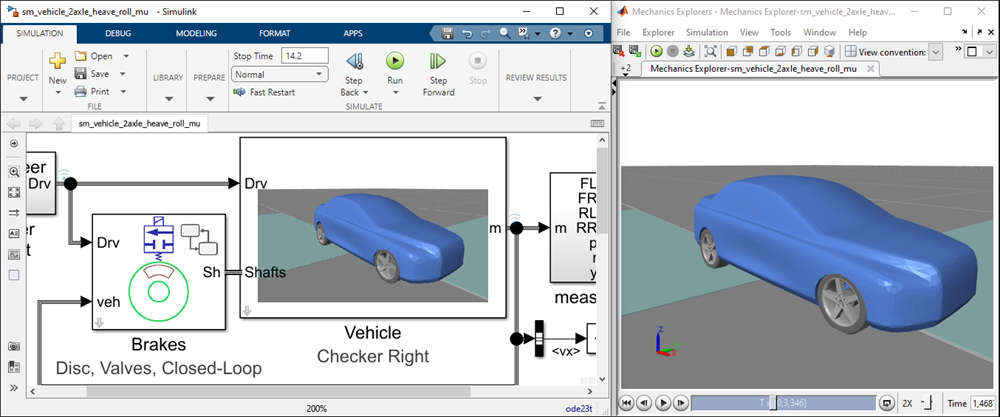
Open Vehicle, 14 DOF Model, Varying Surface Friction
(return to Vehicle Dynamics Overview)
This model shows an anti-lock braking system in various stages of development.
- Variable Damper: A variable damper is used to apply braking torque. This lets you assess the amount of torque the brakes need to provide so you can select a brake type.
- Ideal Brake Actuator: An ideal pressure source applies force to a disk caliper. This lets you calculate the force the caliper actuators need to provide so you can size the calipers and pump.
- Hydraulic Brake Actuator: An ideal hydraulic actuator applies force to a disk brake. This lets you size the valves and pumps for the hydraulic system.
- Valve-Driven Actuator: Pressure is applied and released via valves in open-loop control. This lets you select the valve sizes.
- Closed-Loop Control: Pressure is applied and released via valves in closed-loop control. This lets you design the control algorithm.
Contents
- Model
- Vehicle Subsystem
- 1. Variable Damper
- -- Variable Damper Brake Torque
- -- Simulation Results, Right Side Ice Patch
- 2. Ideal Caliper Actuator
- -- Disk Brakes
- -- Ideal Actuator for Caliper
- -- Simulation Results, Right Side Ice Patch
- 3. Hydraulic Brake Actuator
- -- Hydraulic Network, Ideal Hydraulic Caliper Actuators
- -- Simulation Results, Right Side Ice Patch
- 4. Valve-Driven Actuator, Open-Loop Control
- -- Hydraulic Network, Valve-Actuated Calipers
- -- Apply and Release Valves
- -- Simulation Results, Right Side Ice Patch
- 5. Valve-Driven Actuator, Closed-Loop Control
- -- Control System for Front Left Valves
- -- Simulation Results, Right Side Ice Patch
- -- Simulation Results, Checkerboard, Right Low
Model
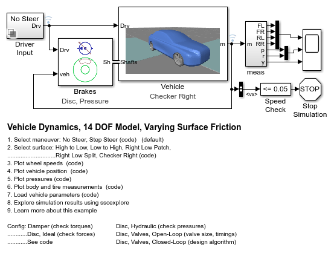Vehicle Subsystem
This subsystem models lateral and longitudinal vehicle dynamics, including front-rear weight transfer, and tire-road forces.
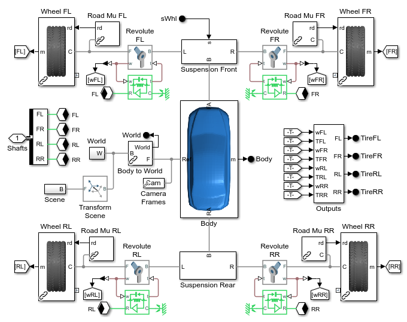1. Variable Damper
In this configuration, brake torque is applied via a variable damper. The damping is a fixed amount and duration, resulting in open-loop control. This test is useful to assess the torque required to slow the vehicle.
-- Variable Damper Brake Torque
This subsystem models the brakes as a variable damper. This is a simple means of applying braking torque to the axle, and can be used to estimate the amount of torque required to stop a vehicle.

-- Simulation Results, Right Side Ice Patch
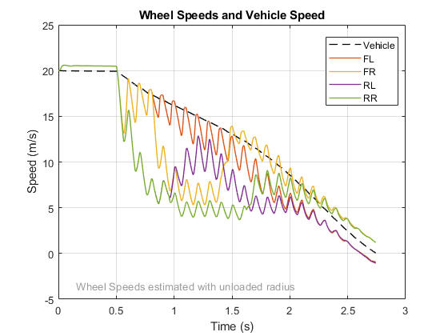 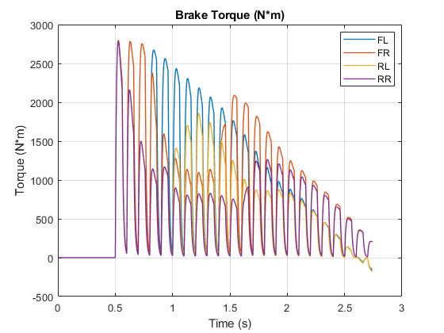2. Ideal Caliper Actuator
In this configuration, brake torque is applied via a disc brake model and an ideal force actuator applies pressure. Brake control is still open-loop (fixed duration and frequency of pulses).
-- Disk Brakes
This subsystem models the disk brakes on a vehicle. The actuator can be configured for various levels of abstraction.
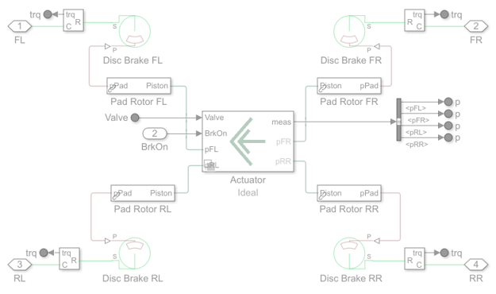-- Ideal Actuator for Caliper
This subsystem models the force applied to the brake caliper. This is an ideal actuator with a filter time constant to model actuator dynamics.
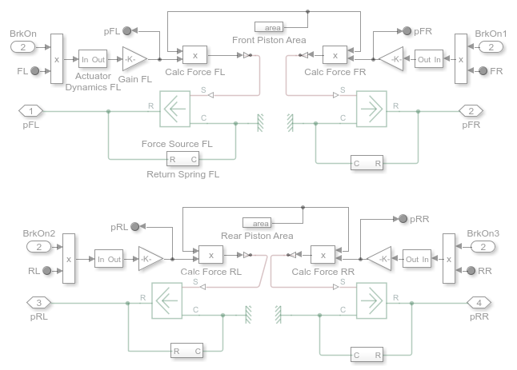-- Simulation Results, Right Side Ice Patch
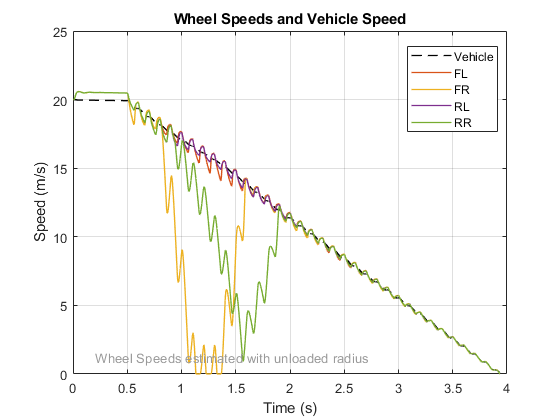3. Hydraulic Brake Actuator
In this configuration, brake torque is applied via a disc brake model and separate ideal pressure sources apply pressure at each piston. Brake control is still open-loop (fixed duration and frequency of pulses). This configuration is used to size the piston and determine flow rates.
-- Hydraulic Network, Ideal Hydraulic Caliper Actuators
This subsystem models an ideal hydraulic actuation system for the caliper system. It assumes the necessary pressure is always available for use at the caliper. A filter time constant is included for actuator dynamics.
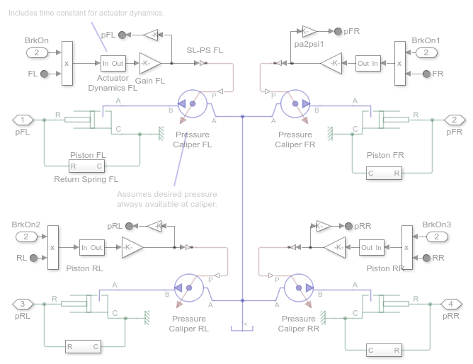-- Simulation Results, Right Side Ice Patch
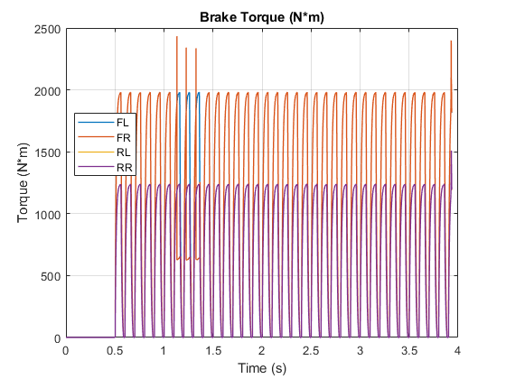 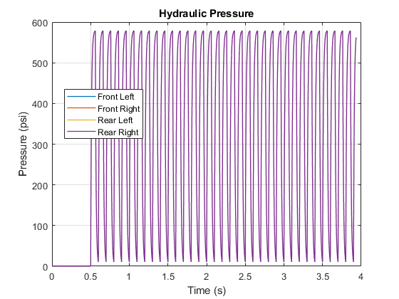4. Valve-Driven Actuator, Open-Loop Control
In this configuration, brake torque is applied via a disc brake model and an pressure is applied and released via valves. An ideal pressure source represents the pump. Brake control is still open-loop (fixed duration and frequency of pulses). This configuration is used to size the valves and determine flow rates.
-- Hydraulic Network, Valve-Actuated Calipers
At this level, a single ideal pressure source represents the master cylinder. Input signals control the apply and release valves.

-- Apply and Release Valves
Variable orifices represent the apply and release valves, which control the flow of hydraulic fluid to and from the brake caliper.
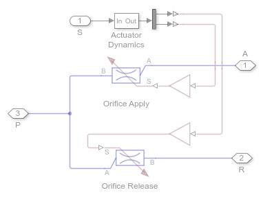-- Simulation Results, Right Side Ice Patch
 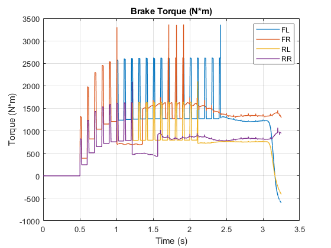 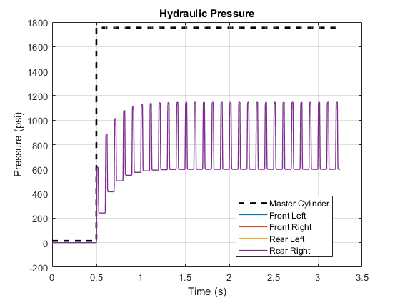 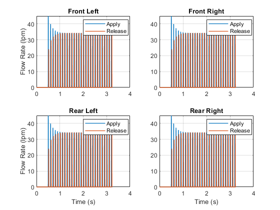 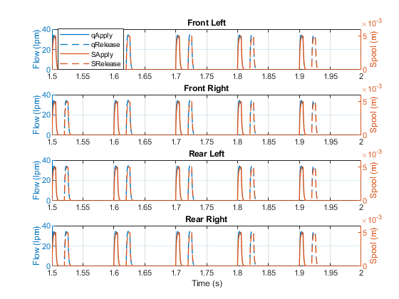
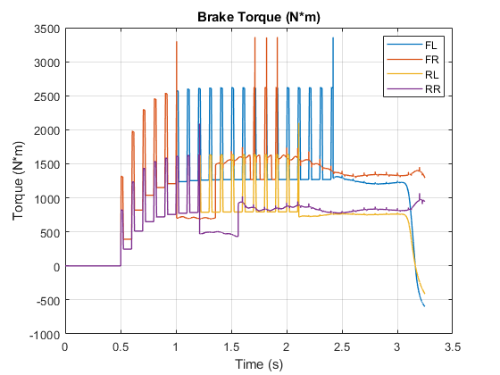 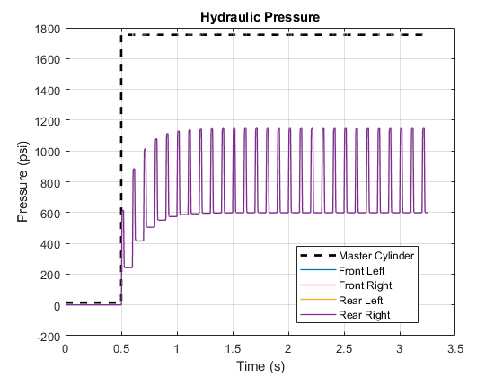 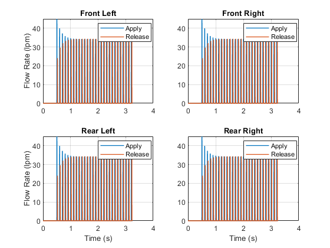 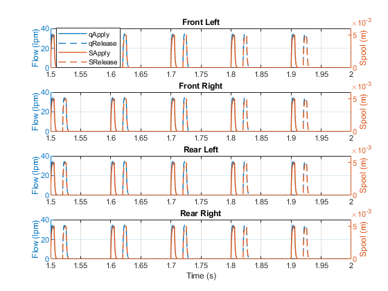 5. Valve-Driven Actuator, Closed-Loop Control
In this configuration, brake torque is applied via a disc brake model and an pressure is applied and released via valves. An ideal pressure source represents the pump. Brake control is still open-loop (fixed duration and frequency of pulses). This configuration is used to size the valves and determine flow rates.
-- Control System for Front Left Valves
This state machine determines if the pressure should be increased, released, or held constant. The decision concerning pressure determines whether the apply and release values should be open or closed.
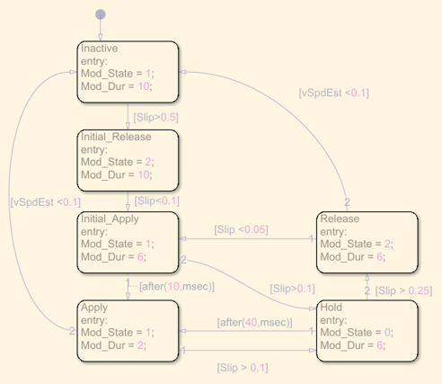